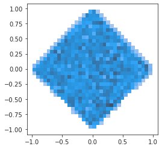

(25) Fit – cuda1#
Motivation: Fitting notebook, cuda1
Show code cell source
# HIDE CODE
import os, sys
from copy import deepcopy as dc
from os.path import join as pjoin
from IPython.display import display, IFrame, HTML
# tmp & extras dir
git_dir = pjoin(os.environ['HOME'], 'Dropbox/git')
extras_dir = pjoin(git_dir, 'jb-MTMST/_extras')
fig_base_dir = pjoin(git_dir, 'jb-MTMST/figs')
tmp_dir = pjoin(git_dir, 'jb-MTMST/tmp')
# GitHub
sys.path.insert(0, pjoin(git_dir, '_MTMST'))
from figures.fighelper import *
from model.opticflow import *
# warnings, tqdm, & style
warnings.filterwarnings('ignore', category=DeprecationWarning)
from tqdm.notebook import tqdm
from rich.jupyter import print
%matplotlib inline
set_style()
Trainer#
from model.vae2d import VAE
from model.train import TrainerVAE
from torch import _dynamo
_dynamo.config.cache_size_limit = 1024
vae = VAE(ConfigVAE(
n_kers=4,
n_latent_scales=2, n_groups_per_scale=20, n_latent_per_group=7,
n_pre_blocks=1, n_post_cells=3, n_cells_per_cond=2,
scale_init=False, ada_groups=True,
))
tr = TrainerVAE(
# model=torch.compile(vae),
model=vae,
cfg=ConfigTrain(
lr=0.001, batch_size=512, epochs=1000, grad_clip=1000,
lambda_anneal=True, lambda_init=0, lambda_norm=1e-2,
kl_beta=0.25, kl_anneal_cycles=1),
device='cuda:1',
)
vae.cfg.total_latents()
210
vae.print()
vae.scales
+-------------+------------+ | Module Name | Num Params | +-------------+------------+ | VAE | 17.0 Mil | | --- | --- | | stem | 1.1 K | | pre | 96.0 K | | enc_tower | 9.4 Mil | | enc0 | 16.6 K | | enc_sampler | 1.4 Mil | | dec_sampler | 1.4 Mil | | expand | 71.0 K | | dec_tower | 4.5 Mil | | post | 40.0 K | | out | 578 | | cos_recon | 0 | | l2_recon | 0 | | l1_recon | 0 | | l1_weight | 0 | +-------------+------------+
[8, 4]
len(vae.all_conv_layers), len(vae.all_log_norm)
(291, 228)
Review train options#
print(f"{vae.cfg.name()}\n{tr.cfg.name()}")
k-32_z-7x[10,20]_cells-2_pre-1x3_post-1x3 ep1000-b512-lr(0.001)_beta(0.25)-anneal(1x0.3)_lambda(0.01)_grad(1000)_bal-equal
Train#
comment = f"cos:mul(0.5){tr.cfg.name()}"
tr.train(comment=comment)
epoch # 1000, avg loss: 14.407031: 100%|██████████| 1000/1000 [23:59:14<00:00, 86.35s/it]
# comment = f"Clamp(5/25)+SmartInitEnc+LambdaAnneal_{tr.cfg.name()}"
# tr.train(comment=comment)
epoch # 1000, avg loss: 12.703732: 100%|██████████| 1000/1000 [17:43:53<00:00, 63.83s/it]
all_norm = [torch.exp(n.ravel()) for n in vae.all_log_norm]
all_norm = to_np(torch.cat(all_norm))
sns.histplot(all_norm, bins=np.linspace(0.5, 1.5, 101));
np.max(all_norm), 100 * (all_norm < 0.5).sum() / len(all_norm), 100 * (all_norm > 1.5).sum() / len(all_norm)
(4.618138, 0.0, 0.1287869495891083)
%%time
val, loss = tr.validate(use_ema=False)
val_ema, loss_ema = tr.validate(use_ema=True)
CPU times: user 4min 17s, sys: 11.1 s, total: 4min 28s
Wall time: 4min 19s
loss_summary = {
k: {
'vae': np.round(v.mean(), 2),
'ema': np.round(loss_ema[k].mean(), 2),
} for k, v in loss.items()
}
print(loss_summary)
{ 'kl': {'vae': 41.7, 'ema': 41.68}, 'epe': {'vae': 2.57, 'ema': 2.57}, 'cos': {'vae': 3.74, 'ema': 3.76}, 'l1': {'vae': 0.89, 'ema': 0.89}, 'l2': {'vae': 0.42, 'ema': 0.42} }
for k, v in val.items():
if 'fig' in k:
print(f"{k} (VAE)")
display(v)
print(f"{k} (EMA)")
display(val_ema[k])
print('-' * 70)
fig/sample (VAE)
fig/sample (EMA)
----------------------------------------------------------------------
fig/regression (VAE)
fig/regression (EMA)
----------------------------------------------------------------------
fig/mutual_info (VAE)
fig/mutual_info (EMA)
----------------------------------------------------------------------
%%time
_ = plot_latents_hist_full(
z=val['z_sample'],
scales=vae.latent_scales()[0],
constrained_layout=False,
tight_layout=True,
)

CPU times: user 40.6 s, sys: 901 ms, total: 41.5 s
Wall time: 41.4 s
_ = plot_latents_hist(
z=val['z_sample'],
scales=vae.latent_scales()[0],
)
val, loss = tr.validate(n_samples=4096)
{k: v.mean() for k, v in loss.items()}
{'kl': 39.03162,
'l1': 0.8505916,
'l2': 0.36098027,
'epe': 2.799537,
'cos': 6.2439375}
print(f"{vae.cfg.name()}\n{tr.cfg.name()}")
k-32_z-5x[10,20]_cells-2_pre-1x3_post-1x3 ep1000-b512-lr(0.0005)_beta(0.25)-anneal(0x0.3)_lambda(0.01)_grad(1000)_bal-equal
for k, v in val.items():
if 'fig' in k:
print(k)
display(v)
fig/sample
fig/corr_z

fig/regression
fig/mutual_info
val, loss = tr.validate(n_samples=4096)
{k: v.mean() for k, v in loss.items()}
{'kl': 39.146107,
'l1': 0.67213154,
'l2': 0.2934362,
'epe': 2.4461472,
'cos': 4.9020963}
print(f"{vae.cfg.name()}\n{tr.cfg.name()}")
k-32_z-5x[10,20]_cells-2_pre-1x3_post-1x3 ep1000-b512-lr(0.001)_beta(0.25)-anneal(1x0.3)_lambda(0.01)_grad(1000)_bal-equal
for k, v in val.items():
if 'fig' in k:
print(k)
display(v)
fig/sample
fig/corr_z
fig/regression
fig/mutual_info
fig/hist_z
fig/hist_x_sample
vae.cfg.save(vae.cfg.save_dir, True)
[PROGRESS] 'ConfigVAE.json' saved at /home/hadi/Documents/MTMST/models/k-32_z-5x[10,20]_cells-2_pre-1x3_post-1x3
np.max(val['regr/mi'])
0.5509332795350277
sns.histplot(np.max(val['regr/mi'], axis=0))
<AxesSubplot:ylabel='Count'>
np.max(val['regr/mi'], 0).mean()
0.12556770123402558
np.diag(val['regr/r']).mean()
0.6949885476922126
z = val['z_sample']
scales=vae.latent_scales()[0]
a = z.reshape((len(z), len(scales), -1))
nrows, ncols = a.shape[1:]
looper = itertools.product(
range(nrows), range(ncols))
mu = np.zeros((nrows, ncols))
std = np.zeros((nrows, ncols))
skew = np.zeros((nrows, ncols))
for i, j in looper:
x = a[:, i, j]
mu[i, j] = x.mean()
std[i, j] = x.std()
skew[i, j] = sp_stats.skew(x)
fig, axes = create_figure(3, 1, (17, 10), 'all', 'all')
im = axes[0].imshow(mu.T, vmin=-3, vmax=3, cmap='coolwarm')
plt.colorbar(im, ax=axes[0])
im = axes[1].imshow(std.T, vmin=0, cmap='hot')
plt.colorbar(im, ax=axes[1])
im = axes[2].imshow(skew.T, vmin=-1, vmax=1, cmap='bwr')
plt.colorbar(im, ax=axes[2])
axes[2].set_title(f"mean abs skew: {np.abs(skew).mean():0.2f}")
plt.show()
print(vae.cfg.name())
k-32_z-7x[10,20]_cells-2_pre-1x3_post-1x3
show_heatmap(val['regr/mi'], vmin=0, vmax=None, cmap='magma', linewidth=0.001,
annot=False, cbar_kws={'pad': 0.005}, figsize=(120, 6))
(<Figure size 8640x432 with 2 Axes>, <AxesSubplot:>)
mi = val['regr/mi']
scales, level_ids = vae.latent_scales()
mi_scales = np.zeros((len(mi), len(level_ids)))
for j, (key, ids) in enumerate(level_ids.items()):
for i, x in enumerate(mi):
mi_scales[i, j] = x[ids].sum() / x.sum()
mi_scales.shape
(11, 30)
names = tr.dl_tst.dataset.factor_names
_ty = [f"{e} ({i:02d})" for i, e in names.items()]
_tx = [e.split('_')[1] for e in level_ids]
show_heatmap(
r=mi_scales,
vmin=0,
vmax=None,
yticklabels=_ty,
xticklabels=_tx,
cmap='magma',
figsize=(15, 4),
);
mi_scales2 = np.zeros((len(mi), len(vae.cfg.groups)))
for j, s in enumerate(np.unique(scales)):
_ids = []
for k, ids in level_ids.items():
if f'scale-{s}' in k:
_ids.extend(list(ids))
for i, x in enumerate(mi):
mi_scales2[i, j] = x[_ids].sum() / x.sum()
show_heatmap(
r=mi_scales2,
vmin=0,
vmax=None,
yticklabels=_ty,
xticklabels=np.unique(scales),
cmap='magma',
figsize=(4, 7),
);
u, s, v = sp_lin.svd(
a=val['z_sample'],
full_matrices=False,
compute_uv=True,
)
s *= 100 / s.sum()
u.shape, s.shape, v.shape
((4096, 210), (210,), (210, 210))
fig, axes = create_figure(2, 1, (13, 7), sharex='all')
axes[0].plot(s, marker='.')
axes[1].plot(np.cumsum(s), lw=3, marker=None)
idx = np.where(np.cumsum(s) > 90)[0][0]
axes[1].axvline(
idx, color='g', ls=':', lw=1.5,
label=f'{idx} latent variables',
)
axes[1].axhline(
90, color='magenta', ls=':', lw=1.5,
label=f'{90}% of variance',
)
axes[1].legend()
axes[1].axhline(0, color='k', ls='--', lw=1.2)
axes[1].axhline(100, color='k', ls='--', lw=1.2)
axes[1].set_ylim((-3, 103))
add_grid(axes)
plt.show()
x, norm = next(iter(tr.dl_tst))
x, norm = tr.to([x, norm])
w = 1 / norm
tr.model.eval();
with torch.no_grad():
y, *_ = tr.model(x)
l1 = tr.model.l1_recon(x, y)
l1 = torch.sum(l1, dim=[1, 2, 3])
l1_bal = l1 * w / w.mean()
l1_bal = to_np(l1_bal)
l1 = to_np(l1)
l1.shape
(512,)
np.argmax(l1)
70
np.argmax(l1_bal)
240
i = 240
show_opticflow_full(x[i])
show_opticflow_full(y[i]);
from model.common import endpoint_error
epe = endpoint_error(x, y)
epe_bal = epe * w / w.mean()
epe_bal = to_np(epe_bal)
np.argmax(epe_bal)
358
i = 358
show_opticflow_full(x[i])
show_opticflow_full(y[i]);
cos = 1 - F.cosine_similarity(x, y)
cos = torch.sum(cos, dim=[1, 2])
cos = to_np(cos)
plt.plot(cos);
np.argmax(cos)
54
l2_true = vae.l2_recon(x, y)
l2_true = torch.sum(l2_true, dim=[1, 2, 3])
l2_true = l2_true * w / w.mean()
l2_true = to_np(l2_true)
l2_true.sum()
207.89807
l1_bal.sum(), l2_true.sum(), epe_bal.sum(), cos.sum()
(473.46494, 207.89807, 1405.092, 1729.4995)
np.argmax(l2_true)
50
np.argsort(epe_bal)[:5]
array([212, 331, 191, 66, 394])
epe_bal[212], epe[212]
(0.75170535, tensor(1.4748, device='cuda:1'))
i = 212
show_opticflow_full(x[i])
show_opticflow_full(y[i]);
np.argsort(epe_bal)[-2]
216
i = 216
show_opticflow_full(x[i])
show_opticflow_full(y[i]);
np.argmin(cos)
231
i = 231
show_opticflow_full(x[i])
show_opticflow_full(y[i]);

l1_bal[231], epe_bal[231]
(0.16059518, 1.7316251)
plt.plot(epe_bal)
[<matplotlib.lines.Line2D at 0x7f12ab424a60>]
w2p = {}
norms_expand = {}
for i, layer in enumerate(vae.expand):
w2p[i] = to_np(layer.weight)
_norm = to_np(layer.log_weight_norm.exp().sum())
norms_expand[i] = _norm
print({i: np.round(v, 3) for i, v in norms_expand.items()})
{ 0: 8.075, 1: 7.89, 2: 7.982, 3: 8.093, 4: 8.207, 5: 8.365, 6: 8.694, 7: 8.425, 8: 8.954, 9: 8.398, 10: 8.831, 11: 8.532, 12: 8.114, 13: 7.756, 14: 8.459, 15: 9.309, 16: 8.496, 17: 10.181, 18: 8.249, 19: 8.808, 20: 10.707, 21: 10.24, 22: 9.496, 23: 10.018, 24: 9.746, 25: 9.194, 26: 8.062, 27: 7.593, 28: 7.588, 29: 4.987 }
scales, _ = tr.model.latent_scales()
num = vae.cfg.n_latent_per_group
for i, _w in w2p.items():
fig, axes = create_figure(num, num, (10, 8), 'all', 'all', tight_layout=True)
for z, k in itertools.product(range(num), range(num)):
ax = axes[z, k]
ax.imshow(_w[z, k])
if z == 0:
ax.set_title(f"k = {k}", fontsize=13)
if k == 0:
ax.set_ylabel(f"z = {z}", fontsize=13)
fig.suptitle(f'Expand_{i} (scale = {scales[i]})', fontsize=15, y=1.02)
plt.show()
from sklearn.feature_selection import mutual_info_regression
z = val['z_vld'][:, 12]
g = val['g_vld']
fig, ax = create_figure(figsize=(10, 2))
ax.plot(mutual_info_regression(g, z), marker='.')
ax.set_xticks(range(11))
ax.grid()
v_slf = g[:, 2:5]
v_slf = cart2polar(v_slf)
v_slf.shape
(7500, 3)
sns.histplot(v_slf[:, 0]);
fig, ax = create_figure(figsize=(4, 2))
ax.plot(mutual_info_regression(v_slf, z), marker='.')
ax.set_xticks(range(3))
ax.grid()
vae.cfg.n_latent_per_group
20
from model.vae2d import *
norms = collections.defaultdict(list)
# norms['stem'] = list(to_np(vae.stem.log_weight_norm.exp()))
for cell in vae.enc_tower:
for m in cell.modules():
if hasattr(m, 'log_weight_norm'):
norms[f"{type(cell).__name__}_enc"].extend(
list(to_np(m.log_weight_norm.exp())))
for cell in vae.dec_tower:
for m in cell.modules():
if hasattr(m, 'log_weight_norm'):
norms[f"{type(cell).__name__}_dec"].extend(
list(to_np(m.log_weight_norm.exp())))
for cell in vae.enc_sampler:
for m in cell.modules():
if hasattr(m, 'log_weight_norm'):
norms['enc_sampler'].extend(
list(to_np(m.log_weight_norm.exp())))
for cell in vae.dec_sampler:
for m in cell.modules():
if hasattr(m, 'log_weight_norm'):
norms['dec_sampler'].extend(
list(to_np(m.log_weight_norm.exp())))
for cell in vae.expand:
for m in cell.modules():
if hasattr(m, 'log_weight_norm'):
norms['expand'].extend(
list(to_np(m.log_weight_norm.exp())))
for cell in vae.pre:
for m in cell.modules():
if hasattr(m, 'log_weight_norm'):
norms[f"{type(cell).__name__}_pre"].extend(
list(to_np(m.log_weight_norm.exp())))
for cell in vae.post:
for m in cell.modules():
if hasattr(m, 'log_weight_norm'):
norms[f"{type(cell).__name__}_post"].extend(
list(to_np(m.log_weight_norm.exp())))
norms = dict(sorted(norms.items()))
fig, axes = create_figure(2, 4, (13, 5), constrained_layout=True)
for i, (k, v) in enumerate(norms.items()):
ax = axes.flat[i]
ax.axvline(1, color='k', ls='--', lw=1.0, zorder=0)
sns.histplot(v, color=f"C{i}", bins=np.linspace(0, 5, 101), label=f"{k} ({np.mean(v): 0.1f})", ax=ax)
title = f"max: {np.max(v):0.1f}\n{100 * (np.array(v) > 5).sum() / len(v):0.1f} % are > 5"
ax.set_title(title, fontsize=10)
ax.set_ylabel('')
ax.legend()
plt.show()
i = 0
for cell in vae.modules():
if isinstance(cell, Cell):
for m in cell.modules():
i += 1
i
678
i = 0
for lay in vae.modules():
if isinstance(lay, (Conv2D, DeConv2D)):
i += 1
i
87
vae.modules()
<generator object Module.modules at 0x7f2b4176b4a0>
next(vae.named_children())
('stem',
ParametrizedConv2D(
2, 32, kernel_size=(4, 4), stride=(1, 1), padding=valid
(parametrizations): ModuleDict(
(weight): ParametrizationList(
(0): _SpectralNorm()
)
)
))
tr.cfg.beta = 1.0
beta = 0.9
self = tr
x, norm = next(iter(tr.dl_tst))
x, norm = tr.to([x, norm])
tr.model.eval;
with torch.no_grad():
y, _, q_all, p_all = self.model(x)
kl_all, kl_diag = self.model.loss_kl(q_all, p_all)
def kl_balancer(kl_all, alpha=None, coeff=1.0, beta=1.0):
if alpha is not None and coeff < beta:
alpha = alpha.unsqueeze(0)
kl_all = torch.stack(kl_all, dim=1)
kl_coeff_i, kl_vals = kl_per_group(kl_all)
total_kl = torch.sum(kl_coeff_i)
kl_coeff_i = kl_coeff_i / alpha * total_kl
kl_coeff_i = kl_coeff_i / torch.mean(
kl_coeff_i, dim=1, keepdim=True)
kl = torch.sum(kl_all * kl_coeff_i.detach(), dim=1)
# for reporting
kl_coeffs = kl_coeff_i.squeeze(0)
else:
kl_all = torch.stack(kl_all, dim=1)
kl_vals = torch.mean(kl_all, dim=0)
kl = torch.sum(kl_all, dim=1)
kl_coeffs = torch.ones(size=(len(kl_vals),))
return coeff * kl, kl_coeffs, kl_vals
balanced_kl, kl_coeffs, kl_vals = kl_balancer(
coeff=0.5,
kl_all=kl_all,
alpha=self.alpha,
beta=10,
)
kl_vals
tensor([2.0650, 4.7259, 3.4965, 5.4857, 3.0087, 1.8146, 2.6250],
device='cuda:1')
kl_coeffs
tensor([0.6236, 1.4233, 1.0538, 1.6517, 0.9073, 0.5484, 0.7919],
device='cuda:1')
len(all_conv_layers)
87
self = vae
apply_norm = None
apply_norm = apply_norm if apply_norm else [
'enc_tower', 'dec_tower']
self.all_log_norm = []
self.all_conv_layers = []
for child_name, child in self.named_children():
for m in child.modules():
if isinstance(m, (Conv2D, DeConv2D)):
self.all_conv_layers.append(m)
if child_name in apply_norm:
self.all_log_norm.append(
m.log_weight_norm)
len(self.all_log_norm), len(all_conv_layers)
(69, 87)
tr.cfg.kl_anneal_portion, tr.cfg.kl_const_portion
(0.3, 0.0001)
tr.cfg.kl_const_portion = 0.4
epochs = range(1000)
n_total_iter = len(epochs) * len(tr.dl_trn)
coeffs = np.zeros(n_total_iter)
for gstep in range(n_total_iter):
beta = kl_coeff(
step=gstep,
total_step=tr.cfg.kl_anneal_portion * n_total_iter,
constant_step=tr.cfg.kl_const_portion * n_total_iter,
min_kl_coeff=tr.cfg.kl_const_coeff,
)
coeffs[gstep] = beta
plt.plot(coeffs)
[<matplotlib.lines.Line2D at 0x7fb859ef5f70>]
x, norm = next(iter(tr.dl_tst))
x, norm = tr.to([x, norm])
with torch.no_grad():
y, z, _, _, kl_all, _ = tr.model(x)
err = endpoint_error(
true=x,
pred=y,
w=None,
)
err_balanced = endpoint_error(
true=x,
pred=y,
w=1/norm,
)
fig, ax = create_figure(1, 1, (20, 4))
ax.plot(to_np(err))
ax.plot(to_np(err_balanced))
[<matplotlib.lines.Line2D at 0x7f38bce39be0>]
ids = np.argsort(to_np(err))[::-1][:16]
ids
array([ 70, 50, 75, 125, 84, 95, 17, 90, 61, 11, 83, 43, 44,
121, 54, 112])
show_opticflow(to_np(x)[ids]);

show_opticflow(to_np(y)[ids]);
to_np(norm)[ids].mean(), to_np(norm)[ids].std()
(131.92853, 54.550587)
ids = np.argsort(to_np(err_balanced))[::-1][:16]
ids
array([ 54, 125, 12, 43, 50, 7, 75, 95, 70, 19, 61, 35, 10,
57, 42, 17])
show_opticflow(to_np(x)[ids]);
show_opticflow(to_np(y)[ids]);
to_np(norm)[ids]
array([ 41.65228 , 66.227554, 23.419271, 70.42371 , 122.443756,
58.194283, 110.26061 , 107.50057 , 277.6194 , 42.64491 ,
96.87961 , 72.19697 , 73.896515, 38.897198, 37.01743 ,
127.250305], dtype=float32)
to_np(norm)[ids].mean(), to_np(norm)[ids].std()
(85.407776, 58.64926)
list(val)
['x_sample',
'z_sample',
'z_vld',
'z_tst',
'g_vld',
'g_tst',
'regr/mi',
'regr/r',
'regr/lr',
'fig/sample',
'fig/corr_z',
'fig/regression',
'fig/mutual_info',
'fig/hist_z',
'fig/hist_x_sample']
val['fig/mutual_info']
data, loss = forward(tr, 'tst')
{k: v.mean() for k, v in loss.items()}
{'kl': 91.2339, 'recon': 2.0290143, 'recon_balanced': 1.3277894}
{k: v.shape for k, v in loss.items()}
{'kl': (2500,), 'recon': (2500,), 'recon_balanced': (2500,)}
plt.plot(loss['kl'])
[<matplotlib.lines.Line2D at 0x7f390983dcd0>]
plt.plot(loss['recon_balanced'])
[<matplotlib.lines.Line2D at 0x7f38986f0580>]
worst = np.argsort(loss['recon_balanced'])[::-1]
show_opticflow_full(data['x'][worst[2]]);
show_opticflow_full(data['y'][worst[2]]);
worst_kl = np.argsort(loss['kl'])[::-1]
show_opticflow_full(data['x'][worst_kl[0]]);
show_opticflow_full(data['y'][worst_kl[0]]);

sp_stats.pearsonr(loss['recon_balanced'], loss['kl'])
(0.6837016724074185, 0.0)
sp_stats.pearsonr(loss['recon'], loss['kl'])
(0.5539106515657071, 4.76752002755197e-201)
sp_stats.pearsonr(loss['recon_balanced'], loss['recon'])
(0.5525529432454842, 7.138997974281768e-200)
_ = show_opticflow(val['x_sample'], 6)
list(val)
['x_sample',
'z_sample',
'z_vld',
'z_tst',
'g_vld',
'g_tst',
'regr/mi',
'regr/r',
'regr/lr',
'fig/sample',
'fig/corr_z',
'fig/regression',
'fig/mutual_info',
'fig/hist_z',
'fig/hist_x_sample']
for k, v in val.items():
if 'fig' in k:
print(k)
display(v)
fig/sample
fig/corr_z
fig/regression
fig/mutual_info
fig/hist_z
fig/hist_x_sample
to_np(torch.linalg.vector_norm(vae.stem.weight, dim=[1, 2, 3]))
array([0.12810904, 0.21889564, 0.21213646, 0.23898908, 0.26464158,
0.22333531, 0.14764893, 0.22803165, 0.19473101, 0.14975601,
0.28858453, 0.28247535, 0.234966 , 0.14203611, 0.25449663,
0.2774155 , 0.14323731, 0.24444684, 0.21794473, 0.21319197,
0.14051361, 0.31486693, 0.22484505, 0.09385117, 0.19239986,
0.15647613, 0.1816894 , 0.27404597, 0.16939262, 0.3176312 ,
0.24297562, 0.13734569, 0.20481722, 0.27996248, 0.36396262,
0.10510738, 0.21351688, 0.35216305, 0.12966399, 0.12744176,
0.13831973, 0.18600093, 0.12826237, 0.11905325, 0.19547994,
0.15562478, 0.27106288, 0.20461586, 0.6398145 , 0.17176522,
0.26067924, 0.21045041, 0.1722161 , 0.23007245, 0.1166497 ,
0.25988105, 0.24044141, 0.24709582, 0.36232522, 0.1462865 ,
0.25419515, 0.17688769, 0.13448782, 0.15440232], dtype=float32)
w = to_np(vae.stem.weight)
w.shape
(64, 2, 4, 4)
_ = show_opticflow(w, 8, figsize=(13,) * 2, tick_spacing=1)
for k in range(64):
_ = show_opticflow_full(w[k], tick_spacing=1)
# Was with Linear sampler + expand
# Was with Linear sampler + expand
w2p = {}
norms_expand = {}
for i, layer in enumerate(vae.expand):
w2p[i] = to_np(layer.weight)
_norm = to_np(layer.log_weight_norm.exp())
norms_expand[i] = list(_norm)
print({i: np.round(v, 3) for i, v in norms_expand.items()})
{ 0: array([8.186], dtype=float32), 1: array([10.674], dtype=float32), 2: array([15.024], dtype=float32), 3: array([124.413], dtype=float32), 4: array([365.485], dtype=float32), 5: array([146.037], dtype=float32), 6: array([98.435], dtype=float32) }
scales = vae.latent_scales()
for i, _w in w2p.items():
num = tr.model.cfg.n_latent_per_group
fig, axes = create_figure(1, num, (11, 2.0), 'all', 'all', tight_layout=True)
for z in range(num):
ax = axes.flat[z]
im = ax.imshow(_w[z, 0])
plt.colorbar(im, ax=ax)
ax.set_title(f'z = {z}', fontsize=13)
fig.suptitle(f'Expand_{i} (scale = {scales[i]})', fontsize=15, y=1.02)
plt.show()

x_sample, z_sample = val['x_sample'], val['z_sample']
ax = sns.histplot(z_sample.ravel(), bins=100)
ax.grid()

_ = plot_latents_hist_full(z_sample, scales)
rho, theta = vel2polar(np.transpose(x_sample, (0, 2, 3, 1)))
rho.shape
(4096, 19, 19)
fig, axes = create_figure(1, 3, (13, 3), constrained_layout=True)
sns.histplot(rho.ravel(), stat='percent', label=r'$\rho$', ax=axes[0])
sns.histplot(rho.ravel(), stat='percent', label=r'$\rho$', ax=axes[1])
sns.histplot(np.log(rho[rho.nonzero()]), label=r'$\log \rho$', stat='percent', ax=axes[2])
for ax in axes.flat:
ax.set_ylabel('')
ax.legend(fontsize=15)
for ax in axes[:2].flat:
ax.axvline(1, color='r', ls='--', lw=1.2)
axes[0].set_ylabel('[%]', fontsize=15)
axes[1].set_yscale('log')
axes[2].set_xlim(-10, 2)
axes[2].axvline(0, color='r', ls='--', lw=1.2)
plt.show()
n = 40
bins = np.linspace(-1, 1 + 2 / n, n + 2) - 1 / n
fig, axes = create_figure(2, 2, figsize=(9, 5), sharex='all', sharey='col', constrained_layout=True)
for i in range(2):
lbl = r'$v_x$' if i == 0 else r'$v_y$'
sns.histplot(x_sample[:, i, ...].ravel(), label=lbl, bins=bins, stat='percent', ax=axes[i, 0])
sns.histplot(x_sample[:, i, ...].ravel(), label=lbl, bins=bins, stat='percent', ax=axes[i, 1])
axes[i, 1].set_yscale('log')
for ax in axes.flat:
ax.set_ylabel('')
ax.legend(fontsize=15)
plt.show()
norm = rho.mean(1).mean(1)
sns.histplot(norm);
plot_latents_hist(z_sample, scales);
i, z_idx = np.unravel_index(np.argmax(z_sample), z_sample.shape)
i, z_idx
(51, 17)
show_opticflow_full(x_sample[i]);
i, z_idx = np.unravel_index(np.argmin(z_sample), z_sample.shape)
i, z_idx
(3438, 16)
show_opticflow_full(x_sample[i]);

ticks = [
i for i in range(tr.model.cfg.total_latents())
if i % tr.model.cfg.n_latent_per_group == 0
]
ticklabels = [i + 1 for i in ticks]
val['z'].shape
(7500, 35)
u, s, v = sp_lin.svd(val['z'], full_matrices=False, compute_uv=True)
s *= 100 / s.sum()
u.shape, s.shape, v.shape
((7500, 35), (35,), (35, 35))
fig, ax = create_figure(figsize=(8, 3))
ax.plot(s, marker='o')
ax.set(xticks=ticks, xticklabels=ticklabels)
ax.grid()
fig, ax = create_figure()
ax.plot(v[2], marker='.')
ax.axhline(0, color='r', ls='--')
ax.set(xticks=ticks, xticklabels=ticklabels)
ax.grid()
plt.show()
r = 1 - sp_dist.pdist(val['z'].T, 'correlation')
r = sp_dist.squareform(r)
fig, ax = create_figure(1, 1, (15, 12))
sns.heatmap(
r,
center=0,
cmap='bwr',
linewidths=0.005,
linecolor='silver',
square=True,
annot=True,
fmt='.1f',
annot_kws={'fontsize': 8},
ax=ax,
);
# create datasets
f = pjoin(tr.model.cfg.data_dir, tr.model.cfg.h_pre)
f = h5py.File(f, mode='r')
fix = np.array(f['vld']['fix'], dtype=float)
pos_obj = np.array(f['vld']['pos_obj'], dtype=float)
vel_obj = np.array(f['vld']['vel_obj'], dtype=float)
vel_slf = np.array(f['vld']['vel_slf'], dtype=float)
f.close()
pos = dc(pos_obj)
pos[0] -= fix[:, 0]
pos[1] -= fix[:, 1]
g = np_nans((len(fix), 11))
g[:, :2] = fix
g[:, 2:5] = vel_slf.T
g[:, 5:8] = vel_obj.T
g[:, 8:11] = pos.T
g.shape
(7500, 11)
u_g, s_g, v_g = sp_lin.svd(g, full_matrices=False, compute_uv=True)
s_g *= 100 / s_g.sum()
u_g.shape, s_g.shape, v_g.shape
((7500, 11), (11,), (11, 11))
fig, ax = create_figure(figsize=(8, 3))
ax.plot(s, marker='o', label='latents')
ax.plot(s_g, marker='o', label='ground truth')
ax.set(xticks=ticks, xticklabels=ticklabels)
ax.legend()
ax.grid()
show_opticflow(val['x_sample'][2000:3000], 4);
num = 20
z_vld = np_nans((num, len(tr.dl_vld.dataset), tr.model.cfg.total_latents()))
z_tst = np_nans((num, len(tr.dl_tst.dataset), tr.model.cfg.total_latents()))
for i in tqdm(range(num)):
z_vld[i] = tr.forward('vld', False)[0]['z']
z_tst[i] = tr.forward('tst', False)[0]['z']
100%|██████████| 20/20 [01:37<00:00, 4.89s/it]
fig, axes = create_figure(
7, tr.model.cfg.n_latent_per_group, (12, 10), 'all', 'all', constrained_layout=True)
for i, ax in enumerate(axes.flat):
sns.histplot(z_vld[:, 500, i], kde=True, ax=ax)
show_opticflow_full(val['x'][500]);
r = 1 - sp_dist.pdist(z_vld.mean(0).T, 'correlation')
r = sp_dist.squareform(r)
fig, ax = create_figure(1, 1, (15, 12))
sns.heatmap(
r,
vmin=-1,
vmax=1,
cmap='bwr',
linewidths=0.005,
linecolor='silver',
square=True,
annot=True,
fmt='.1f',
annot_kws={'fontsize': 8},
ax=ax,
);
# create datasets
f = pjoin(tr.model.cfg.data_dir, tr.model.cfg.h_pre)
f = h5py.File(f, mode='r')
fix_vld = np.array(f['vld']['fix'], dtype=float)
pos_obj_vld = np.array(f['vld']['pos_obj'], dtype=float)
vel_obj_vld = np.array(f['vld']['vel_obj'], dtype=float)
vel_slf_vld = np.array(f['vld']['vel_slf'], dtype=float)
f.close()
pos_vld = dc(pos_obj_vld)
pos_vld[0] -= fix_vld[:, 0]
pos_vld[1] -= fix_vld[:, 1]
g_vld = np_nans((len(fix_vld), 11))
g_vld[:, :2] = fix_vld
g_vld[:, 2:5] = vel_slf_vld.T
g_vld[:, 5:8] = vel_obj_vld.T
g_vld[:, 8:11] = pos_vld.T
g_vld.shape
(7500, 11)
# create datasets
f = pjoin(tr.model.cfg.data_dir, tr.model.cfg.h_pre)
f = h5py.File(f, mode='r')
fix_tst = np.array(f['tst']['fix'], dtype=float)
pos_obj_tst = np.array(f['tst']['pos_obj'], dtype=float)
vel_obj_tst = np.array(f['tst']['vel_obj'], dtype=float)
vel_slf_tst = np.array(f['tst']['vel_slf'], dtype=float)
f.close()
pos_tst = dc(pos_obj_tst)
pos_tst[0] -= fix_tst[:, 0]
pos_tst[1] -= fix_tst[:, 1]
g_tst = np_nans((len(fix_tst), 11))
g_tst[:, :2] = fix_tst
g_tst[:, 2:5] = vel_slf_tst.T
g_tst[:, 5:8] = vel_obj_tst.T
g_tst[:, 8:11] = pos_tst.T
g_tst.shape
(2500, 11)
dim_names = {
0: 'fix_x',
1: 'fix_y',
2: 'v_self_x',
3: 'v_self_y',
4: 'v_self_z',
5: 'v_obj_x',
6: 'v_obj_y',
7: 'v_obj_z',
8: 'pos_obj_x',
9: 'pos_obj_y',
10: 'pos_obj_z',
}
corr = 1 - sp_dist.pdist(g_vld.T, metric='correlation')
corr = sp_dist.squareform(corr)
corr.shape
(11, 11)
fig, ax = create_figure(1, 1, (7, 5))
sns.heatmap(
corr,
center=0,
cmap='bwr',
vmin=-1,
vmax=1,
linewidths=0.005,
linecolor='silver',
square=True,
annot=True,
fmt='.1f',
annot_kws={'fontsize': 8},
ax=ax,
);
u_g, s_g, v_g = sp_lin.svd(g_vld, full_matrices=False, compute_uv=True)
s_g *= 100 / s_g.sum()
u_g.shape, s_g.shape, v_g.shape
((7500, 11), (11,), (11, 11))
u, s, v = sp_lin.svd(z_vld.mean(0), full_matrices=False, compute_uv=True)
s *= 100 / s.sum()
u.shape, s.shape, v.shape
((7500, 35), (35,), (35, 35))
ticks = [
i for i in range(tr.model.cfg.total_latents())
if i % tr.model.cfg.n_latent_per_group == 0
]
ticklabels = [i + 1 for i in ticks]
fig, ax = create_figure(figsize=(8, 3))
ax.plot(s, marker='o', label='latents')
ax.plot(s_g, marker='o', label='ground truth')
ax.set(xticks=ticks, xticklabels=ticklabels)
ax.legend()
ax.grid()
fig, ax = create_figure(figsize=(8, 3))
ax.plot(np.cumsum(s), marker='.')
ax.plot(np.cumsum(s_g), marker='.')
ax.axhline(0, color='k', ls='--', lw=1.0)
ax.axhline(100, color='k', ls='--', lw=1.0)
ax.grid()
plt.show()

from sklearn import linear_model
lr = linear_model.LinearRegression().fit(z_vld.mean(0), g_vld)
pred = lr.predict(z_tst.mean(0))
r = 1 - sp_dist.cdist(pred.T, g_tst.T, metric='correlation')
pred.shape, r.shape
((2500, 11), (11, 11))
fig, ax = create_figure(figsize=(12, 10))
sns.heatmap(
r,
cmap='PiYG',
vmin=-1,
vmax=1,
square=True,
linewidth=0.01,
annot=True,
fmt='.1f',
annot_kws={'fontsize': 12},
ax=ax
)
_tx = [f"({i:02d})" for i in range(len(r))]
_ty = [f"{e} ({i:02d})" for i, e in dim_names.items()]
ax.set(xticklabels=_tx, yticklabels=_ty)
ax.tick_params(axis='x', rotation=-90)
ax.tick_params(axis='y', rotation=0)
ax.tick_params(axis='both', labelsize=14)
plt.show()
---------------------------------------------------------------------------
NameError Traceback (most recent call last)
Input In [1], in <cell line: 1>()
----> 1 fig, ax = create_figure(figsize=(12, 10))
2 sns.heatmap(
3 r,
4 cmap='PiYG',
(...)
12 ax=ax
13 )
14 _tx = [f"({i:02d})" for i in range(len(r))]
NameError: name 'create_figure' is not defined
plt.plot(lr.coef_[5])
[<matplotlib.lines.Line2D at 0x7f3e638da730>]
lr = linear_model.LinearRegression().fit(g_vld, z_vld.mean(0))
pred = lr.predict(g_tst)
r = 1 - sp_dist.cdist(pred.T, z_tst.mean(0).T, metric='correlation')
pred.shape, r.shape
((2500, 35), (35, 35))
fig, ax = create_figure(figsize=(12, 10))
sns.heatmap(
r,
cmap='PiYG',
vmin=-1,
vmax=1,
square=True,
linewidth=0.01,
annot=True,
fmt='.1f',
annot_kws={'fontsize': 8},
ax=ax
)
plt.show()

vars(lr)
{'fit_intercept': True,
'normalize': 'deprecated',
'copy_X': True,
'n_jobs': None,
'positive': False,
'n_features_in_': 35,
'coef_': array([[-2.18570090e-03, -2.59592126e-03, -1.15389225e-02,
5.64444299e-02, 1.19172094e-02, -5.65754753e-03,
-8.17442421e-03, -3.92212147e-03, 3.72369530e-02,
-5.13237205e-02, 1.62669208e-02, 2.20023472e-02,
2.01507572e-02, 8.20003025e-03, -3.63662844e-02,
-7.77073097e-01, -1.10785200e-02, 4.38862634e-03,
-3.92732273e-03, -5.82938209e-01, 1.98454211e-01,
8.13466119e-01, 1.72950876e-02, 1.50428378e-03,
7.06772883e-03, -1.77596548e-01, 1.98863661e-03,
4.89883113e-02, -5.30132788e-03, -6.34084039e-02,
5.30599802e-03, -2.48630726e-04, -3.09760885e-03,
2.61727970e-02, 4.47924373e-03],
[ 1.24912585e-02, -4.97571548e-03, -4.45894339e-03,
-7.61631137e-03, 5.81235643e-02, 1.46483902e-02,
8.05811894e-03, 2.47247573e-02, 3.95762194e-04,
2.95405229e-02, -2.25413188e-02, -1.58882278e-02,
6.13936021e-02, -2.38226560e-02, 1.45460211e-02,
-5.52837060e-01, -2.82218137e-03, 4.13239901e-03,
7.75376198e-03, -1.34530042e-01, -3.58413307e-02,
4.54167464e-01, -7.11677869e-03, 1.02300629e-03,
9.89258978e-03, -5.18011570e-03, -1.36642477e-02,
-3.25138379e-03, -1.20143036e-02, -4.50514529e-02,
-1.12819747e-02, 1.21838776e-02, 1.40796315e-02,
9.00130120e-03, -1.15041506e-02],
[ 3.93183245e-03, 2.97604133e-04, -1.51396542e-03,
1.55694520e-03, -5.05425563e-04, -1.87380925e-03,
1.56021010e-03, -1.19292931e-03, -2.59079031e-03,
-1.55676001e-04, -6.58260916e-04, -1.74014611e-03,
-7.71364576e-04, 3.44622153e-03, -5.93968700e-03,
-6.94840561e-01, 3.78522210e-03, -5.55543253e-03,
-2.50089831e-03, -2.32374383e-02, 1.40803553e-01,
8.79103837e-01, -1.43061256e-02, -6.41034053e-03,
-9.69549171e-03, -1.69915523e-01, 5.86999655e-05,
1.40135927e-02, 5.38934300e-03, 9.37910171e-02,
6.02028540e-04, -1.88533656e-02, -9.74364269e-03,
3.37806422e-04, 1.14479821e-02],
[-3.68232217e-03, 3.16675178e-03, -3.26700141e-04,
-2.26069033e-04, 5.58720856e-04, 2.79579216e-03,
1.87546594e-03, 6.55334542e-04, -1.36081386e-03,
6.20561749e-04, -1.61180683e-04, 1.47883766e-03,
-5.02509723e-04, 1.76338970e-03, -6.28329200e-04,
1.11733071e-01, 8.28269481e-03, 3.16327835e-03,
-3.84897796e-03, -3.82746028e-02, 8.66247810e-02,
9.97816684e-02, -5.04447935e-04, 2.87596839e-03,
-6.27544942e-03, 6.14535221e-02, 1.91565042e-03,
2.58449663e-02, -2.66327231e-03, -8.98923567e-02,
1.20162675e-03, 8.41579963e-03, 1.22707142e-02,
5.31696529e-03, -1.91739709e-02],
[-1.44237621e-03, -2.12463335e-03, 3.51339281e-03,
3.60206131e-04, 1.82226470e-03, -3.34613303e-03,
1.38100753e-03, 1.79469013e-03, -4.52998673e-03,
3.00283558e-03, -7.37682736e-05, 3.26994933e-03,
-3.40988971e-03, -1.99536393e-03, -3.85516867e-03,
5.18347149e-01, -6.33594722e-04, -1.21569195e-03,
-2.98055439e-03, 2.10155911e-01, -8.09632459e-02,
-4.72227580e-01, 2.05240730e-03, -3.56040361e-02,
9.65480043e-02, 4.99145830e-02, -7.88081441e-02,
-5.65202970e-03, 9.21159637e-02, 1.12143554e-02,
3.95876727e-03, 5.19067201e-03, -1.37572137e-02,
-9.94433867e-03, 8.70547209e-04],
[-7.86744002e-03, -7.22340477e-04, -3.33318160e-03,
-5.55996632e-03, 3.95192982e-04, -4.95256701e-03,
8.48176736e-03, -1.94509207e-03, 2.35355288e-03,
7.23977014e-03, -4.58137362e-05, 7.30806652e-04,
3.00589747e-03, -4.31098199e-03, 7.21423596e-03,
-2.88248326e-01, -1.20294165e-01, 2.97748456e-01,
3.04329272e-03, 3.42741400e-01, -1.95416376e-01,
1.83038166e-01, -1.17657939e-01, -6.05748575e-03,
2.82439143e-03, 9.97155277e-02, 6.27838464e-03,
-3.55752194e-02, 2.22413402e-04, -5.41072677e-03,
8.20939613e-03, -1.66212291e-03, -2.45079546e-02,
-4.97795850e-03, 1.56173035e-02],
[-6.97350225e-03, -6.23036649e-03, 8.82832539e-04,
3.56853177e-03, 4.22366322e-03, 1.57384087e-03,
-3.22169648e-03, 5.47899347e-03, 3.36158675e-03,
2.32481274e-03, -4.90079154e-03, 8.05028534e-05,
-6.34715916e-04, 5.80704934e-03, 5.79815403e-03,
2.02638840e-01, -4.63978998e-01, 1.15468949e-02,
1.96974668e-02, 5.64411520e-02, 2.16768612e-01,
-1.63117712e-01, 3.03813697e-02, -2.33049033e-03,
-1.29147769e-03, 3.70040487e-02, 1.06991324e-03,
-9.31646446e-03, -4.05323378e-04, 1.91743662e-01,
4.90707051e-04, 2.63060339e-03, -1.30478803e-02,
-1.12969714e-02, 1.49739035e-02],
[-1.21743826e-02, 1.14575143e-02, -1.20533311e-02,
1.00772703e-02, 4.05450168e-03, 5.76160041e-03,
3.90205853e-03, -8.02857372e-03, -1.70412651e-02,
-3.71354337e-03, 1.43524049e-03, 4.53497374e-03,
1.02018136e-02, -1.45028242e-02, 9.48666357e-03,
-2.65470139e-01, 8.21486472e-04, -1.98693202e-03,
3.37251481e-01, 6.06778473e-03, -3.28658295e-02,
6.11604220e-02, -1.32889790e-02, -2.27185389e-02,
3.01885617e-02, 1.20436944e-01, -2.52849766e-03,
-5.10556473e-02, 6.79748658e-03, 1.37935371e-01,
-4.11982737e-02, -2.86453637e-02, -1.82208784e-02,
-1.01982683e-01, -2.46374894e-02],
[ 9.86291355e-03, 1.00921255e-02, -5.96991776e-03,
-2.29217012e-01, -5.56892838e-02, 4.14443849e-03,
-2.39462220e-03, -1.88180824e-03, 2.00850041e-06,
-7.05465211e-03, 5.58379502e-05, -4.53784966e-03,
4.95798199e-03, -2.44177035e-02, -1.12019319e-03,
-8.12799664e-01, 2.17071921e-04, 2.32062961e-03,
5.21094845e-03, -2.99542647e-02, 1.63297161e-01,
7.41126774e-01, -9.48848067e-03, -1.39352162e-03,
-5.17570221e-03, -9.11324142e-02, -2.67416909e-03,
2.36686973e-02, 2.26054370e-03, 2.56365609e-02,
-8.52890316e-04, -2.59912652e-03, 3.18556895e-03,
3.68119839e-02, 1.63662494e-03],
[-1.20719659e-02, -3.34499505e-03, -1.33362833e-02,
4.14424849e-02, -2.26178576e-01, -4.76534807e-03,
-3.29697569e-03, 8.55216887e-03, 7.86640345e-04,
-2.84478095e-03, -3.02982652e-03, 3.82179118e-04,
3.83069511e-03, 8.61783681e-03, 1.86372911e-03,
7.99720171e-01, -2.23036577e-03, -4.46708585e-04,
-2.07168853e-03, 1.36066439e-01, -1.74512961e-01,
-6.87473547e-01, 8.24270578e-03, -1.03027821e-03,
7.33312269e-04, 6.70129968e-02, 4.01852487e-03,
-6.73197501e-03, 3.29634727e-03, -7.11629141e-02,
1.39349773e-03, 7.29548033e-04, 5.65022780e-03,
-8.84515348e-03, -1.21811517e-02],
[-1.66295377e-03, -1.30064193e-02, -1.02084454e-02,
3.62750024e-03, 1.63881714e-03, -4.71747325e-03,
1.66827814e-03, -3.38737920e-03, 3.30804441e-03,
-2.48987295e-03, 1.10423533e-02, -2.69372013e-03,
-1.27742247e-03, 4.43966631e-03, 5.65553478e-03,
-8.89055976e-03, 1.08121617e-03, -1.72176894e-03,
-1.45860105e-03, 7.18320870e-01, -1.44324196e-01,
-5.27228875e-02, 5.88070820e-03, 9.94032206e-04,
2.77240780e-03, 6.69308167e-02, 1.30523559e-03,
-2.56795282e-02, 4.67750706e-04, -4.77394518e-02,
-2.21700876e-03, 1.48644692e-03, 3.84742589e-03,
-2.37351151e-03, 1.62122224e-03]]),
'_residues': array([1132.75679715, 1155.64183284, 359.36537902, 367.97661366,
408.67212291, 1062.71583187, 954.13794166, 2579.60074057,
453.51679896, 422.12792552, 140.75570359]),
'rank_': 35,
'singular_': array([176.15032671, 139.72524993, 130.72897268, 125.73807527,
120.18596078, 114.97554829, 113.54326733, 112.2898992 ,
107.65381329, 101.67402297, 100.28708916, 98.36556187,
94.62796796, 92.90513198, 89.40521636, 87.02540136,
82.26809101, 80.76213756, 73.48931838, 69.08715705,
67.98115739, 65.5298719 , 63.92902732, 61.55709088,
56.53159096, 54.8364951 , 40.27866263, 34.67732134,
32.82407959, 28.69799492, 26.87617816, 4.31080175,
2.78136228, 1.18054275, 0.50824511]),
'intercept_': array([-1.98164990e-01, -4.33271135e-02, -4.78239661e-03, -1.24636662e-02,
6.81566936e-02, 4.45890127e-02, 2.36140925e-02, -4.00488294e-04,
-2.35973093e-03, 4.24979151e-02, 9.89884466e-01])}
lr.coef_.shape
(11, 35)
sns.heatmap(lr.coef_)
<AxesSubplot:>
np.abs(lr.coef_).sum(0)
array([0.07434665, 0.05801439, 0.06713592, 0.35969673, 0.36510722,
0.05423694, 0.04401463, 0.06156385, 0.0729674 , 0.11031075,
0.06021131, 0.05733954, 0.11013665, 0.10132372, 0.092474 ,
5.03259864, 0.61522552, 0.33422682, 0.38974499, 2.27872811,
1.46987226, 4.60738618, 0.22621503, 0.08194198, 0.17246512,
0.94629304, 0.1143101 , 0.24977782, 0.13093408, 0.78298627,
0.07671217, 0.08264556, 0.12140875, 0.21706147, 0.11814359])
plt.plot(100 * lr.singular_ / lr.singular_.sum())
[<matplotlib.lines.Line2D at 0x7f3e996d3670>]
g_vld.shape[-1]
(7500, 11)
mutual_info_regression(z_vld.mean(0), g_vld)
from sklearn.feature_selection import mutual_info_regression
mi = np.zeros((11, 35))
for i in range(11):
mi[i] = mutual_info_regression(z_vld.mean(0), g_vld[:, i])
fig, axes = create_figure(3, 4, (12, 5), 'all', 'none', constrained_layout=True)
for i in range(11):
ax = axes.flat[i]
ax.plot(mi[i], marker='.')
ax.set_title(dim_names[i])
ax.grid()
trim_axs(axes, 11)
plt.show()
fig, ax = create_figure(figsize=(17, 5))
sns.heatmap(mi, vmin=0, linewidth=0.01, linecolor='dimgrey')
ax.set_yticklabels([f"{e} ({i:02d})" for i, e in dim_names.items()])
ax.tick_params(axis='y', rotation=0)
plt.show()
mi_normalzied = mi / mi.sum(1, keepdims=True)
fig, ax = create_figure(figsize=(17, 5))
sns.heatmap(mi_normalzied, vmin=0, linewidth=0.01, linecolor='dimgrey')
ax.set_yticklabels([f"{e} ({i:02d})" for i, e in dim_names.items()])
ax.tick_params(axis='y', rotation=0)
plt.show()
i, j = 5, 9
c_xy = np.histogram2d(g_vld[:, i], z_vld.mean(0)[:, j], 50)[0]
plt.imshow(c_xy);
i, j = 6, 12
c_xy = np.histogram2d(g_vld[:, i], z_vld.mean(0)[:, j], 50)[0]
plt.imshow(c_xy);
fix = g_vld[:, :2]
fix = np.concatenate([
fix,
np.ones((len(fix), 1)),
], axis=1)
fix.shape
(7500, 3)
ax = sns.histplot(x=fix[:, 0], y=fix[:, 1])
ax_square(ax);

heading = g_vld[:, 2:5]
sns.histplot(cart2polar(heading)[:, 0]);
scales = vae.latent_scales()
for i, _w in w2p.items():
num = tr.model.cfg.n_latent_per_group
fig, axes = create_figure(1, num, (12, 2.0), 'all', 'all', tight_layout=True)
for z in range(num):
ax = axes.flat[z]
im = ax.imshow(_w[z, 0])
plt.colorbar(im, ax=ax)
ax.set_title(f'z = {z}', fontsize=13)
fig.suptitle(f'Expand_{i} (scale = {scales[i]})', fontsize=15, y=1.02)
plt.show()